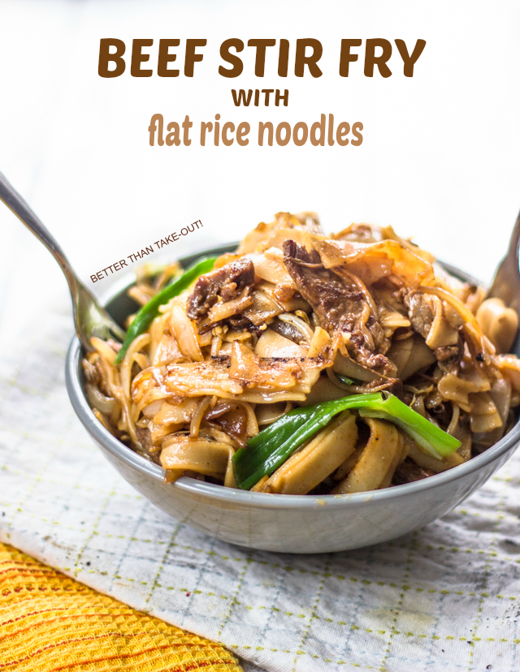

Stir Fry Beef with Rice Noodles
The yummiest dish on any Chinese fast food menu is both delicious and yet deceptively difficult to master at home.

But not to fret, with a few instructions, you too can somewhat kinda attempt making this Chinese staple at home as well.
Ingredients
- Flat white rice noodles (uncooked rice flour noodle rice sticks)
- 1 cup sliced green onions
- 1 cup sliced onions
- 1 cup green bean sprouts
- 2/3 cup top sirloin strip steak cut into thin strips
- 1 tablespoon canola/vegetable/peanut oil (use a flavor neutral cooking oil with a high smoke point)
- 2 Garlic cloves, diced
- 3 tablespoons soy sauce
- 1 tablespoon sesame oil
- Chili oil with red pepper flakes (use as needed, per taste)
Steps
- Cook the noodles per instructions, leaving them a little undercooked. Drain and rinse under cold water. Drain again, use your fingers to separate the noodles so they do not clump together, and set them aside.
- Heat a wok over high heat. Add the cooking oil and spread evenly over the surface of the wok, giving it a chance to coat the entire inside of the wok. Add the garlic slices and let them toast briefly so that the oil becomes infused with garlic flavor. Now add the beef and stir fry until browned, then remove beef and garlic from wok and set aside.
- Add the onions, stir fry for 1 minute before adding the bean sprouts and stir frying for another 30 seconds. Remove both and set aside.
- Reduce heat to medium, and add the noodles along with the sesame oil and soy sauce. Mix them well so that the noodles are thoroughly covered.
- Bring the heat back up to high. Add the beef, onions and bean sprouts. Toss well.
- Turn off heat. Add the green onions and chili oil with red pepper flakes. Toss well again, using only the residual heat.
- Plate and serve!
- If you used a wok, you need to wash and re-season before joining everyone else to eat!.